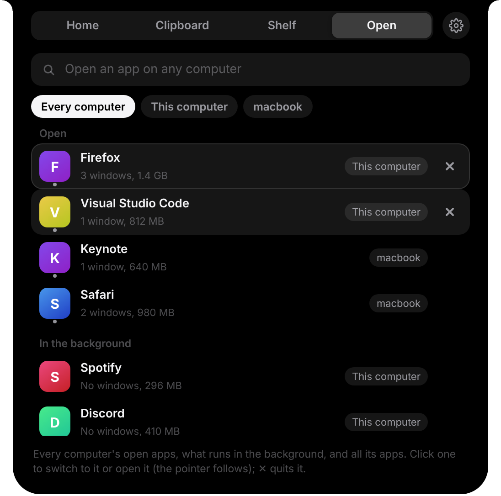
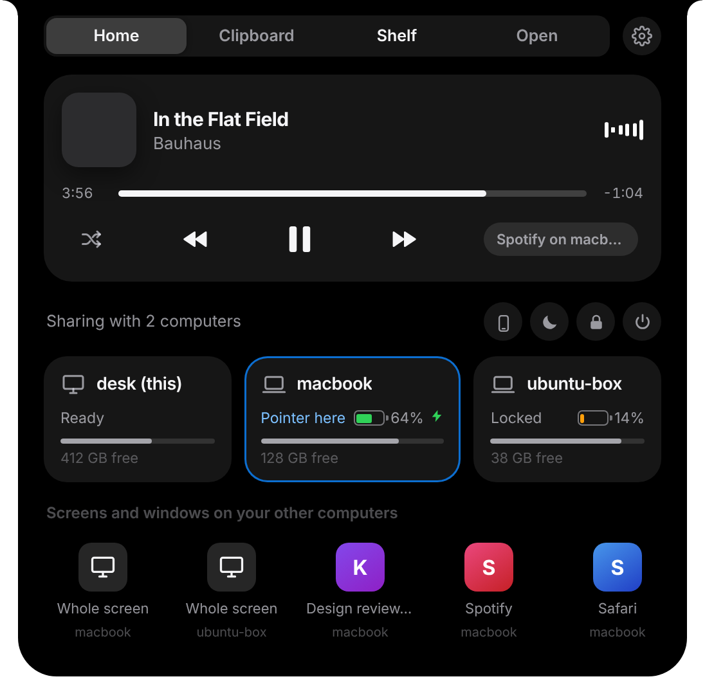
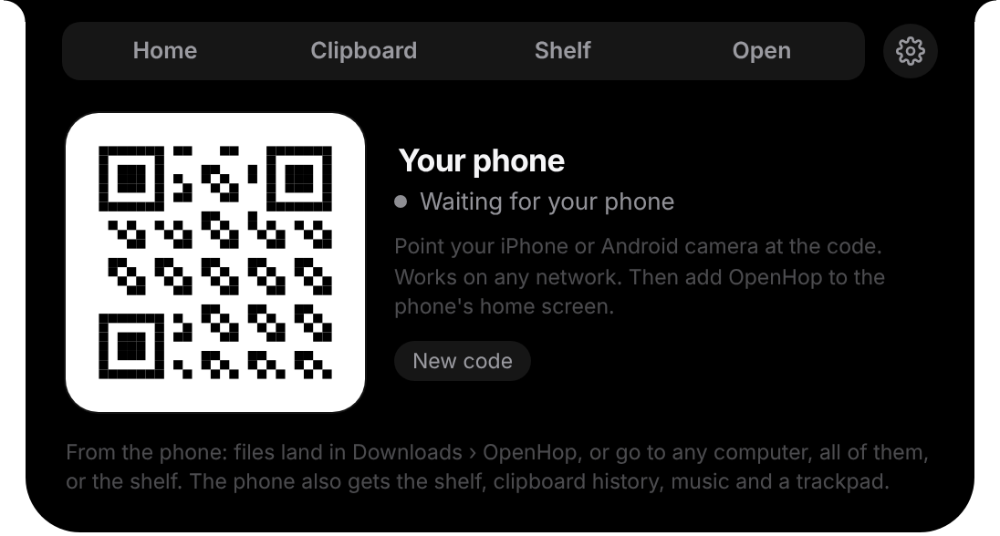

One mouse. One keyboard.
Arrange your screens the way they sit on your desk, then just move. Keys type wherever the pointer is, and ⌘ and Ctrl swap for you between a Mac and a PC.
Free and open source · Windows, macOS, Linux
Move one mouse and keyboard across all your computers, copy on one and paste on another, drag files between screens, and bring your phone along. OpenHop makes your desk feel like a single machine.
Push the pointer off the edge of one screen and it’s on the next, with the file you were dragging.
A slim black pill at the top of every screen. Rest the pointer on it and it opens into a control center: music, every computer’s battery and storage, their open apps, your clipboard history and the shelf. It wraps a MacBook’s notch and gets its own lane everywhere else, so it never covers a tab.



Arrange your screens the way they sit on your desk, then just move. Keys type wherever the pointer is, and ⌘ and Ctrl swap for you between a Mac and a PC.
Text, images, whole folders. Everything you copy is in a searchable history on every computer.
Drop them into a folder or an app on the other computer, like a local drag.
Open a window from another computer on this screen and use it. Or see its whole screen.
“OpenHop Shared” stays the same on every computer. The newest change wins.
What pops up on the others shows on the computer you’re using.
A computer you’re using from elsewhere stays awake while it’s busy for you. When it’s idle it sleeps on its own, and the others don’t follow it to bed. Sleep All when you’re done for the day.
Scan the code in the island and the OpenHop app goes on your iPhone or Android home screen. No app store. Send photos, videos and files to any computer, to all of them, or to the shelf. Get files back with one tap to save. Use it as a trackpad, a keyboard and a presenter remote.
No account, no cloud, no tracking. Your computers talk to each other directly, and everything is encrypted end to end.
Every keystroke, pointer move and file goes through the Noise protocol: X25519, ChaCha20-Poly1305, BLAKE2s. There is no unencrypted mode. Pair once with a six-digit code.
The QR code carries a 256-bit secret that never leaves your devices. Connections are set up through public relays that only ever see sealed data, then run directly over WebRTC with a second layer of AES-256-GCM inside.
Every line is on GitHub under the MIT license. Read it, build it yourself, or run your own relay.
Decide what each computer allows: being controlled, sharing its keyboard and mouse, Focus, Lock All, Sleep All. Whatever is off disappears from the island. Need to fix something on a locked-down computer? Ask to help: its owner sees the request, says yes, and a red frame stays on their screen the whole time, with Stop one click away.
Install it on every computer you use. It’s free, it updates itself, and it keeps running quietly in the background.
Then open the island on your computer, tap the phone button and scan the code to add your phone.